Everything you need to know to run your books, invoices, payroll, inventory, contacts, and reports in Ledgerly.
Ledgerly is an all-in-one business finance app. It replaces a spreadsheet-and-separate-tools setup with one place to track money in and out, send invoices, manage inventory, keep a client/vendor directory, run payroll, and see reports — with support for nine currencies and AI-generated insights on top of your live numbers.
USD, EUR, GBP, JMD, GHS, CAD, INR, AUD, and JPY. Each transaction, invoice, and employee record keeps whatever currency it was created in.
Ledgerly supports email/password sign-in as well as Google sign-in. Once signed in, you land on the Dashboard.
Every screen shares the same left-hand sidebar. From top to bottom:
In the top-right of every page you'll find a bell icon and a Refresh button. The bell opens your recent notifications — things like an invoice being marked paid, an item running low, a payroll run completing, or a teammate joining. Unread notifications show a red count on the bell; opening the panel marks them read, and each one is clickable to jump straight to the relevant page. You can dismiss a single notification with its × or clear the whole list with Clear all.
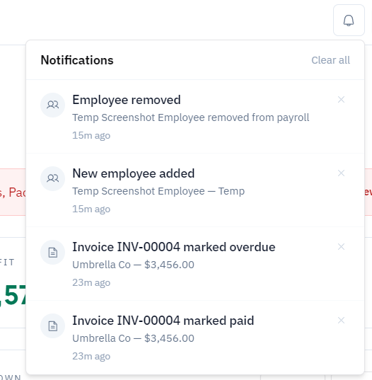
Almost every page follows the same layout: a small category label (e.g. "BOOKKEEPING"), a large page title, a one-line description underneath, and a Refresh button in the top-right corner to pull the latest data.
Ledgerly isn't locked to one look. Under Settings → Appearance you can pick from nine built-in themes — Light, Dark, Ocean, Grey, Sage, Amber, Violet, Indigo, and Rose — or choose Custom to set your own background and accent color. The change applies immediately across the whole app. See Section 12 for details.
The Dashboard is your financial pulse at a glance, using all-time totals unless a card has its own date filter. It's built from several cards:
| Field | What it means |
|---|---|
| Revenue / Expenses / Net Profit | Three headline numbers at the top, each with a trend arrow icon. |
| Outstanding | Total value of unpaid invoices, shown with a document icon. |
| Cash Flow — Revenue vs Expenses | A bar chart comparing income and spending, filterable by day, week, month, or year. |
| Breakdown — Expense Categories | A donut chart showing what share of spending went to each category for the selected period. |
| Business Growth — Profit & Loss | A bar chart of net profit; hover a bar to see its exact figure in a tooltip. |
| Trend — Sales | A line chart of sales across the selected period. |
| Invoicing | Two progress bars: Paid vs Outstanding, and Overdue vs Not Yet Due, for the selected period. |
| Tax Snapshot (all-time) | Tax collected, paid invoices total, and total transaction count, all-time. |
| Live Exchange Rates | Reference rates (1 USD = …) for all nine supported currencies, refreshed on demand. Informational only — not used in any totals. |
Each chart card has its own Day / Week / Month / Year selector (with an exact-date, week, month, or year picker to match) in the top-right, so you can compare different periods without leaving the Dashboard. Your choice for each chart is remembered — come back later and it'll still show what you were last looking at, instead of resetting. Click the expand icon on any chart to view it larger.
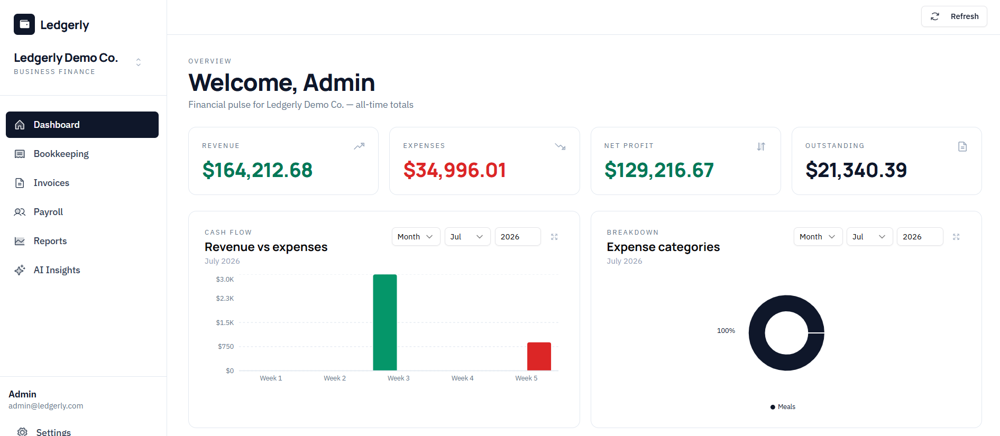
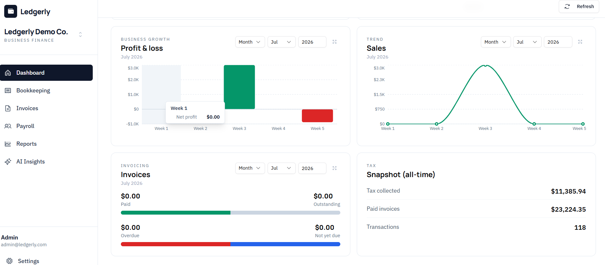
If any inventory items are running low, a red banner appears near the top of the Dashboard with a "View inventory →" link straight to the Inventory page.
This is your day-to-day ledger of money in and out. The Transactions table lists every entry with Date, Type (Income or Expense), Category, Description, Tax, and Amount — income shows in green with a plus sign, expenses in red with a minus sign.
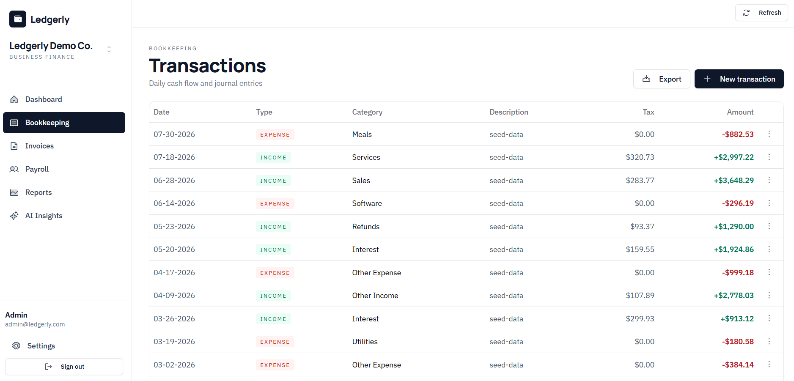
Two dropdowns above the table — Month and Year — narrow the list down to a specific period. Both default to "all," showing your full history.
Click + New transaction in the top-right. The dialog asks for:
| Field | What it means |
|---|---|
| Type | Income or Expense. |
| Date | Defaults to today. |
| Amount | The transaction value. |
| Currency | Any of the nine supported currencies (defaults to USD). |
| Category | e.g. Sales, Services, Interest, Refunds, Other Income for income; Software, Marketing, Supplies, Utilities, Taxes, Meals, Professional Fees, Other Expense for expenses. You can also add your own custom category. |
| Field | What it means |
|---|---|
| Vendor | Expenses only — optionally pick a saved vendor from your Clients & Vendors directory to tag who the money went to. If the description is empty, picking a vendor fills it in with the vendor's name. If you haven't saved any vendors yet, you'll see a prompt linking to the Clients page instead. |
| Tax amount | Optional tax associated with the transaction. |
| Description | Free text notes. |
Click Add to save it to the ledger.
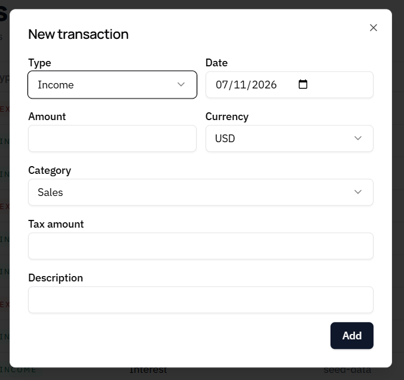
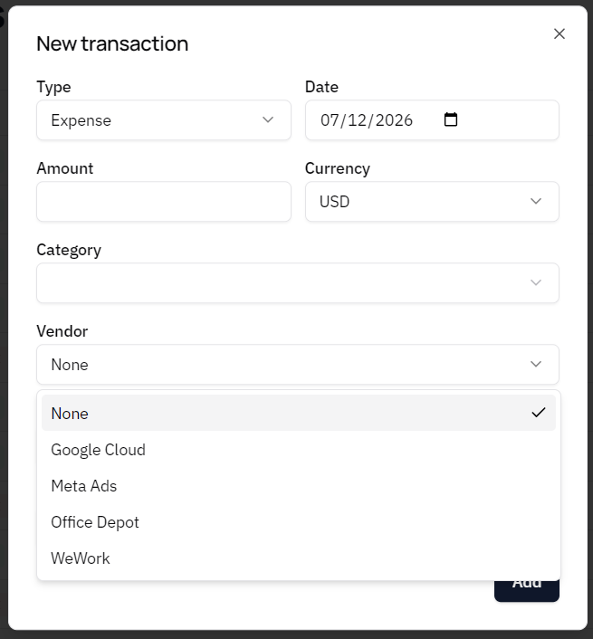
Each row has a menu icon (three dots) on the right for row-level actions.
Click Export in the top-right for a dropdown with three formats: Export CSV, Export XLSX, and Export PDF. See Section 10, Exporting Your Data, for how the download itself works.
The Invoices list shows Invoice #, Client, Issued and Due dates, Status, and Total. Status is color-coded: Draft (gray), Sent (blue), Overdue (red), and Paid (green).
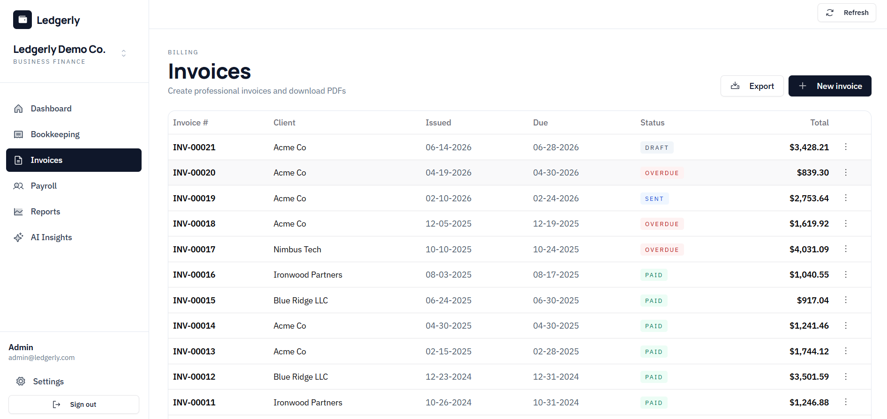
A row of clickable status pills — Draft, Sent, Paid, Overdue — sits above the list. Click one or more to show only invoices in those statuses; click again to remove the filter. With none selected, every invoice shows.
Click + New invoice. If you have any saved clients, a Client directory picker appears at the top of the form — choosing one autofills the name, email, and address below, which you can still edit. Otherwise, or for a one-off client, just fill the fields in manually.
| Field | What it means |
|---|---|
| Client name / email / address | Who the invoice is billed to. |
| Issue date / Due date | Default to today and two weeks out. |
| Currency | Any of the nine supported currencies. |
| Line items | Description, Qty, and Unit Price per line; use + Add line for more rows. A line item can optionally be linked to an inventory item, so marking the invoice sent/paid/overdue automatically deducts that quantity from stock. Subtotal is calculated automatically. |
| Tax rate (%) | Applied across the invoice subtotal. |
| Status | Draft, Sent, Paid, or Overdue. |
| Notes | Optional free text shown on the invoice. |
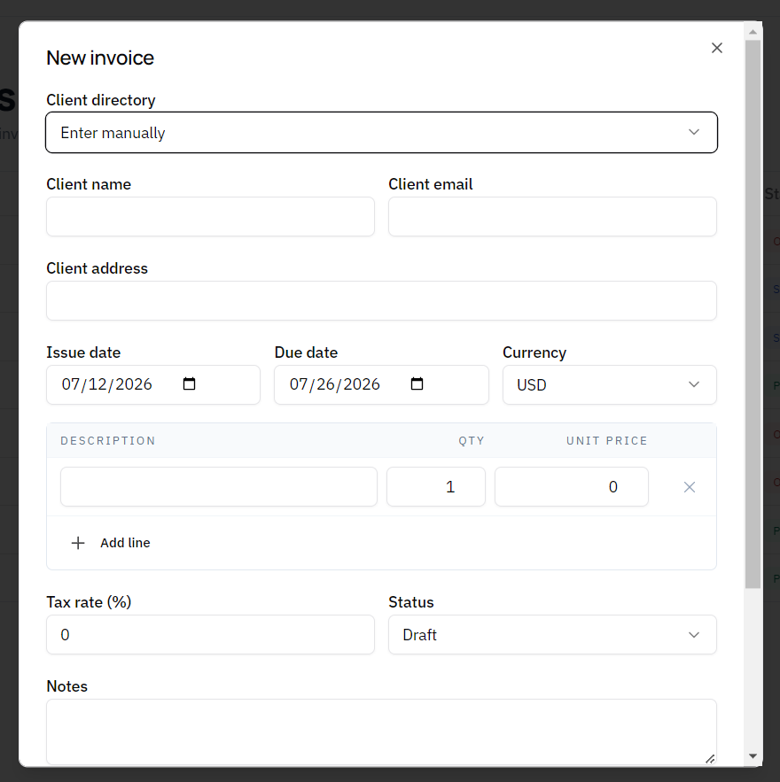
Open the row's menu (three dots) on any invoice row for three actions: Download PDF (a client-ready PDF of that invoice), Edit, and Delete.
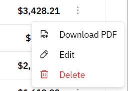
Marking an invoice Paid automatically logs a matching income transaction in Bookkeeping, linked back to that invoice, so your Revenue and Reports actually reflect money you've been paid — no need to log it twice. If you change the status away from Paid again (say, a correction), that transaction is removed, since the money isn't actually there. Editing a still-paid invoice's total keeps the linked transaction's amount in sync automatically.
The Export button (top-right, next to New invoice) offers the same three formats: CSV, XLSX, and PDF.
Clients & Vendors is a saved directory of the people and businesses you deal with, so you don't have to retype the same details every time you create an invoice or log an expense. It's split into two tabs.
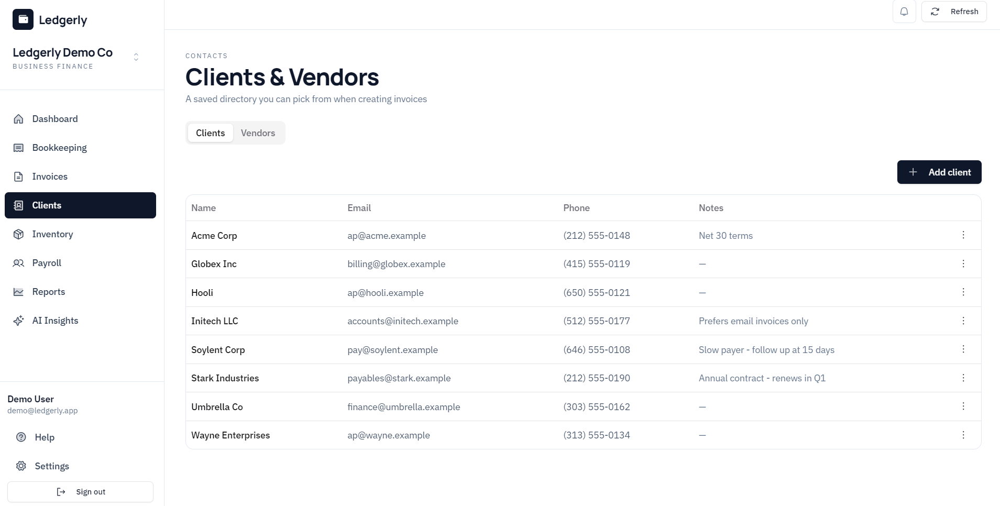
Everyone you bill. Click + Add client to save a Name, Email, Phone, Address, and Notes. Saved clients show up in the Client directory picker when you create a new invoice (see Section 5) — selecting one autofills the invoice's client details.
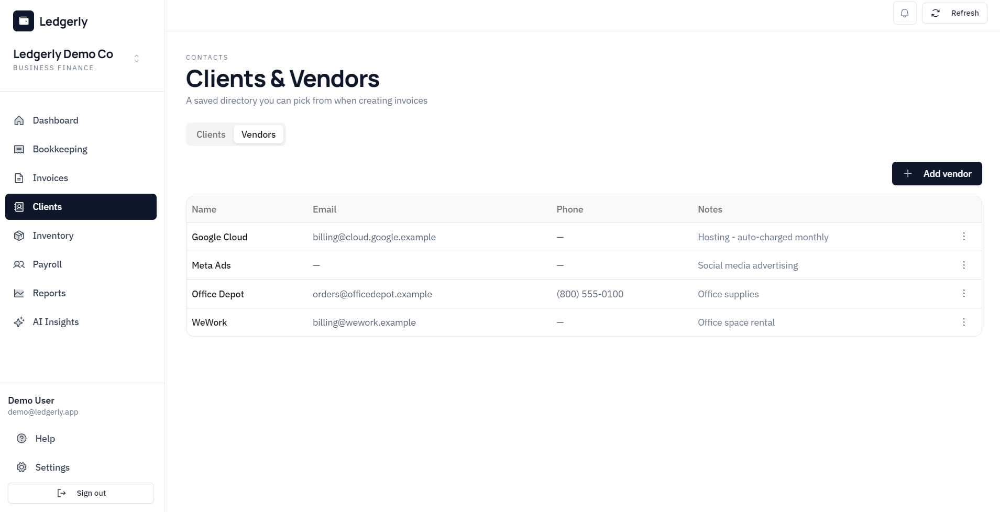
Everyone you pay — suppliers, software subscriptions, landlords, and so on. Click + Add vendor to save the same set of details. Saved vendors show up in the Vendor picker when you log an expense transaction (see Section 4), letting you tag which vendor the money went to.
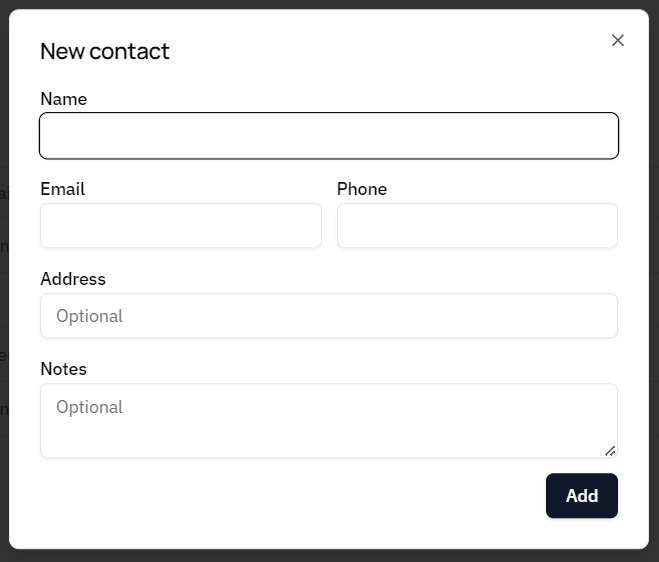
Open a row's menu (three dots) to Edit or Remove a client or vendor. Removing a contact only removes it from the directory — any invoices or transactions that already reference it are unaffected.
Inventory tracks the physical stock your business holds — merch, supplies, equipment, and more — so you always know what's on hand, what it's worth, and when to reorder.
| Field | What it means |
|---|---|
| Items tracked | The number of distinct inventory items on file. |
| Inventory value | Total value of everything in stock: each item's quantity multiplied by its unit cost, summed together. |
| Running low | Count of items at or below their low-stock threshold. |
Whenever one or more items fall at or below their threshold, a red banner lists them by name at the top of the page — and the same alert also surfaces on the Dashboard with a link straight back here.
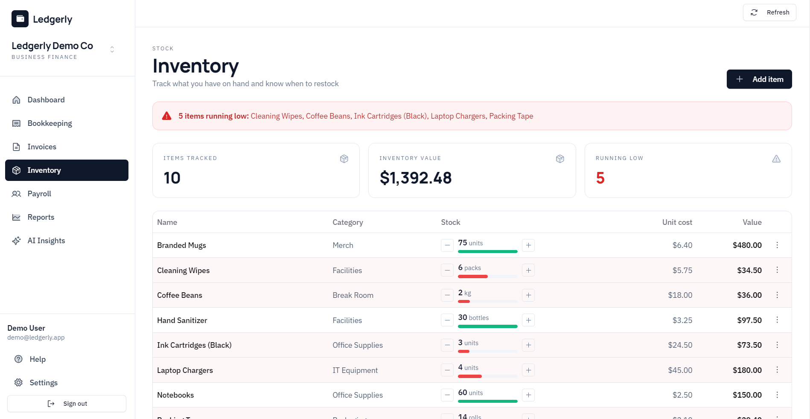
Click + Add item in the top-right.
| Field | What it means |
|---|---|
| Name | The item's name. |
| Category | Optional grouping, e.g. Merch, Facilities, Office Supplies. |
| Quantity | How many you currently have on hand. |
| Unit | What you're counting in, e.g. units, packs, kg, bottles, rolls. |
| Low stock threshold | Get a reminder when quantity falls at or below this level. |
| Unit cost | Cost per unit, used to calculate the item's total value. |
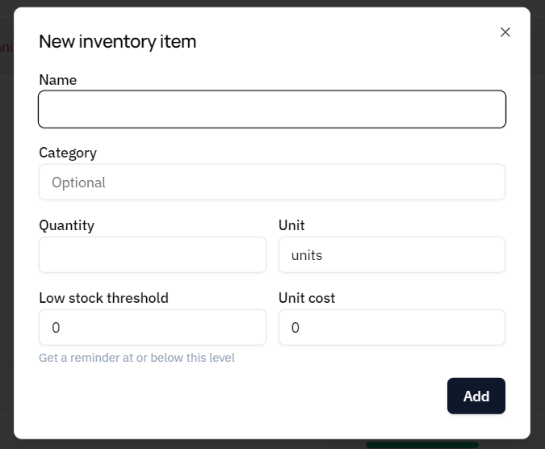
Each row has quick -/+ steppers next to the quantity for fast adjustments, and a colored bar shows stock level at a glance (green when healthy, red at or below the low-stock threshold). Open the row's menu (three dots) to fully Edit an item or remove it.
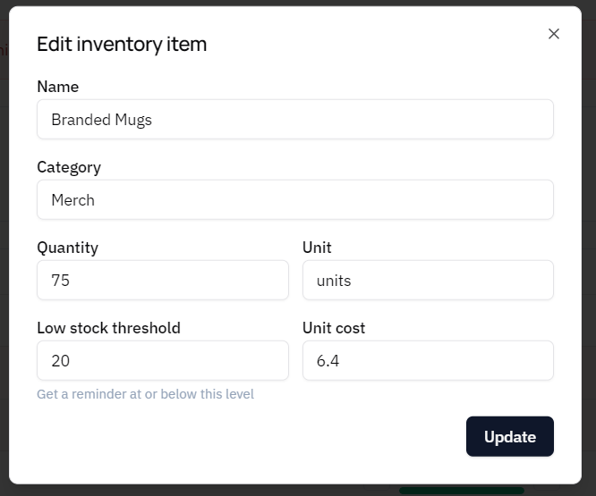
Click Export in the top-right for the same CSV, XLSX, and PDF options as everywhere else, listing every item's category, stock, unit cost, and total value.
Payroll has two tabs: Employees and Payroll runs.
Click + Add employee to open the New Employee form:
| Field | What it means |
|---|---|
| Name | Employee's full name. |
| Optional contact email. | |
| Position | Job title. |
| Salary | Pay amount per period. |
| Tax rate (%) | Withholding rate applied when payroll runs. |
| Currency | Any of the nine supported currencies. |
| Pay frequency | e.g. Monthly. |
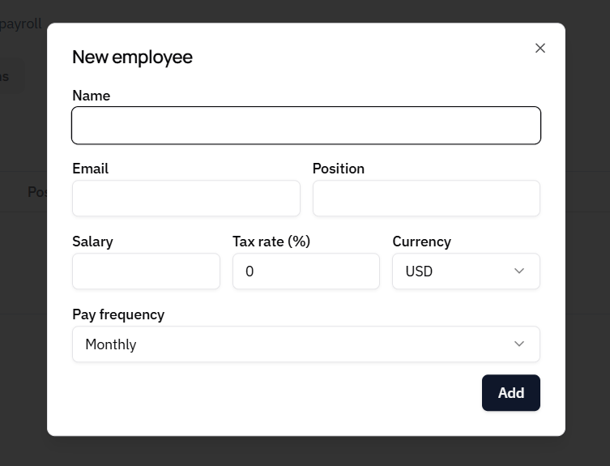
The Employees table lists Name, Position, Frequency, Salary, and Tax % for everyone on file.
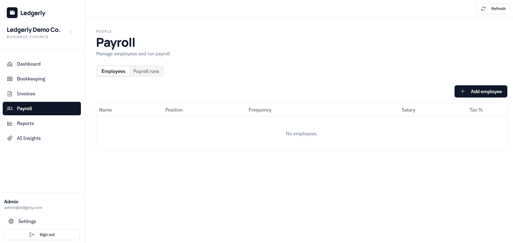
This is where you actually run payroll and see history. A Run payroll button processes the current employee list — each run calculates gross pay, tax, and net pay per employee (a payslip) and automatically logs the total as an expense in Bookkeeping, so your books stay in sync without double entry.
Completed runs appear in a table with Period, Employees, Gross, Tax, and Net. Three export buttons sit above the table: CSV, XLSX, and PDF, for payroll run history and payslips.
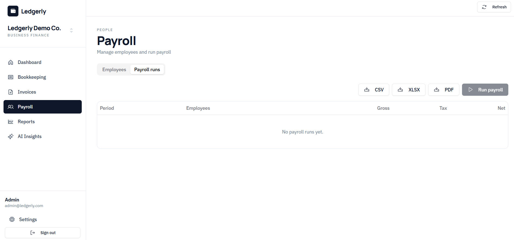
The Reports page generates two statements for any date range you choose. Set the From and To dates and click Run reports. Your last-used date range is remembered the next time you visit.
Lists income by category (e.g. Sales, Refunds, Interest, Other Income, Services) with a Total income line, then expenses by category (e.g. Software, Other Expense, Utilities) with a Total expenses line, and finishes with Net profit for the period.
Shows Tax collected (on income), Tax paid (on expenses), and the resulting Net liability for the same date range.
Each panel has its own Export button to download that specific statement.
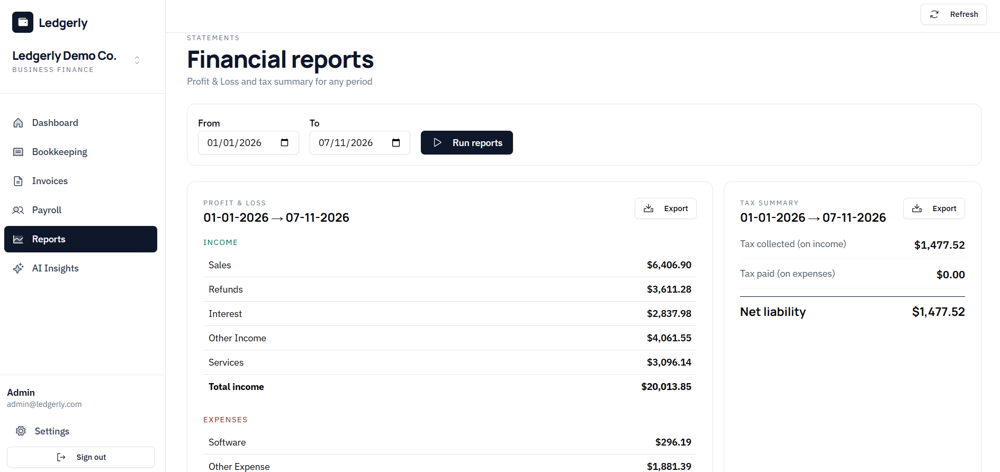
Ledgerly lets you get your data out in three formats almost everywhere: CSV (for spreadsheets or importing elsewhere), XLSX (a formatted Excel workbook), and PDF (a client- or record-ready document). Look for an Export button (sometimes a dropdown, sometimes three separate buttons) in the top-right of these screens:
For a full backup rather than one list at a time, go to Settings → Data & Account → Export my data. It downloads a single ZIP containing every transaction, invoice, client, inventory item, employee, and payslip in your business as CSV files.
Clicking any Export option opens a native Save dialog, defaulting to your Downloads folder with a suggested file name — you can rename the file or pick a different folder right there before saving. While the file is being prepared you'll see a "Downloading…" notification, which updates to "Downloaded" with an Open button once it's ready, so you can jump straight to the file without hunting for it.
Your business logo (set in Settings → Business) appears automatically on PDF exports — invoices, reports, and more — once you've uploaded one.
AI Insights is a chat assistant, powered by Groq, that answers questions grounded in your live business data. Start a conversation with + New chat, or use one of the suggested prompts:
You can also type your own question in the message box at the bottom of the page. Past conversations are saved in the left-hand list.
AI Insights works out of the box on a small shared daily quota. For unlimited use, add your own free Groq API key under Settings → Business → AI Insights (get a key at console.groq.com/keys). Usage then bills to that key's account, not Ledgerly.
Settings is organized into tabs across the top: Profile, Business, Team (owner/admin only), Appearance, Data & Account, and — in the desktop app only — Check for Updates.
Update your account Email and Name, then click Save changes.
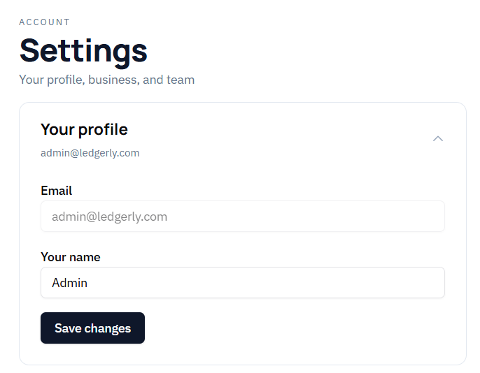
| Field | What it means |
|---|---|
| Logo | Upload a PNG, JPEG, or WEBP up to 1MB. It appears on your PDF exports (invoices, reports, and more). |
| Business name | Shown across the app and on exported documents. |
| Primary currency | Your business's default currency. |
| Relabel existing records | A one-click action to relabel all existing transactions, invoices, employees, and payslips to your current primary currency. Important: this only changes the currency label shown, it does not convert the amounts. |
| AI Insights key | Field to add your own Groq API key for unlimited AI Insights usage. |
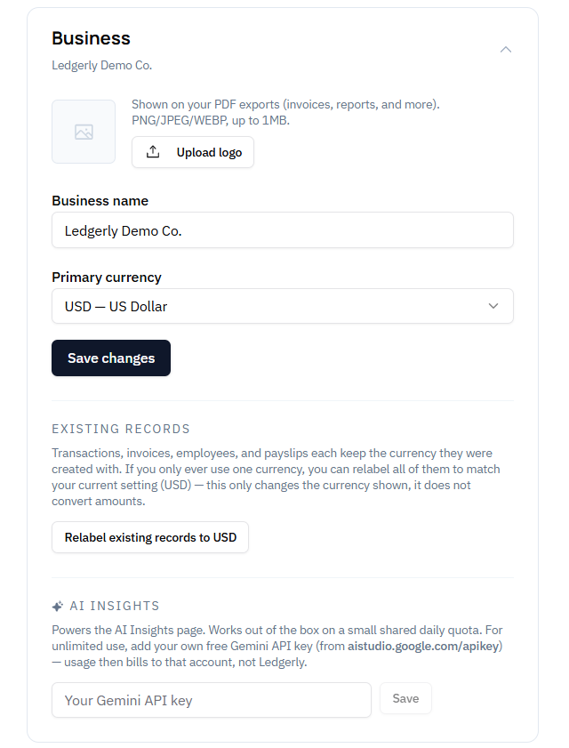
Shows current members and their role (e.g. Owner). To add someone, choose a role from the dropdown (e.g. Staff) and click Generate code to create an invite code; generated codes are listed under Invite Codes.
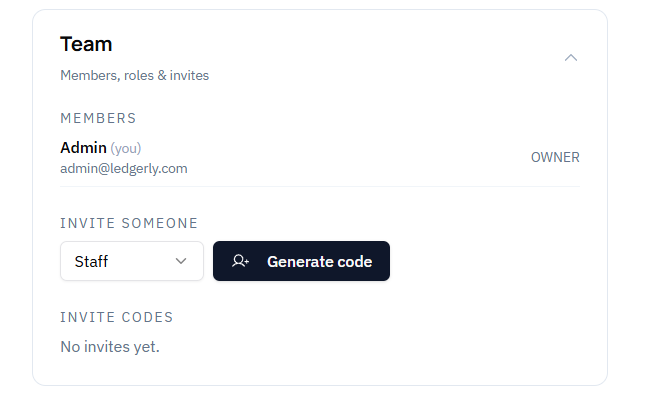
Pick from nine built-in themes — Light, Dark, Ocean, Grey, Sage, Amber, Violet, Indigo, Rose — or choose Custom to set your own background and accent color with color pickers. The change applies immediately.
Two things live here, kept deliberately separate:
Shows your currently installed version number and a Check for Updates button to manually check for a newer release, in addition to the automatic check the app does on its own.
Ledgerly supports nine currencies: USD, EUR, GBP, JMD, GHS, CAD, INR, AUD, and JPY. Currency is chosen per record — each transaction, invoice, and employee keeps whatever currency it was created with, even if you later change your business's primary currency in Settings.
The Dashboard's Live Exchange Rates card shows current reference rates against USD, but these are informational only and are not applied to convert amounts anywhere in the app. If you want every record to display the same currency label, use Relabel existing records in Settings → Business — remembering that it changes the label only, not the underlying amount.
| Field | What it means |
|---|---|
| Add money in/out | Bookkeeping → + New transaction |
| Filter transactions by period | Bookkeeping → Month / Year dropdowns |
| Tag an expense to a vendor | Bookkeeping → New transaction → Expense → Vendor |
| Bill a client | Invoices → + New invoice |
| Filter invoices by status | Invoices → status pills above the list |
| Download a single invoice PDF | Invoices → row menu (three dots) → Download PDF |
| Save a client or vendor | Clients → Add client / Add vendor |
| Add or restock an inventory item | Inventory → + Add item (or the -/+ steppers on a row) |
| Add a team member to payroll | Payroll → Employees tab → + Add employee |
| Run payroll for the period | Payroll → Payroll runs tab → Run payroll |
| See profit for a date range | Reports → set From/To → Run reports |
| Export anything to CSV/XLSX/PDF | Look for the Export button in the top-right of that page |
| Export your whole business as a ZIP | Settings → Data & Account → Export my data |
| Check recent activity & alerts | Click the bell icon, top-right, next to Refresh |
| Ask a question about your finances | AI Insights → + New chat |
| Change your business currency label | Settings → Business → Relabel existing records |
| Add your own AI key | Settings → Business → AI Insights |
| Invite a teammate | Settings → Team → Generate code |
| Switch between businesses | Sidebar → click your business name |
| Change the app's theme | Settings → Appearance |
| Delete your account | Settings → Data & Account → Danger zone |